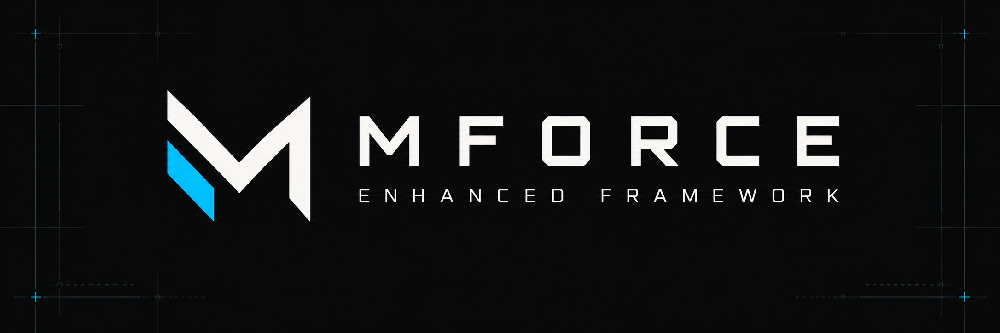

AVAILABLE
CORE MODULE / NETWORKNetwork
Network
Information
Inspect network interfaces, local IP addresses, and host information directly from the terminal.
TERMINAL MODULE
TERMINAL-FIRST. PLATFORM-FLEXIBLE.
A modular, open-source Bash framework for Termux and Linux. Explore network intelligence, authorized security tools and guided workflows — with every command visible and under your control.

01 / CAPABILITIES
Explore five core workflows below, from system insight to authorized checks and safe updates. Every preview is illustrative; nothing is scanned from this website.
Inspect network interfaces, local IP addresses, and host information directly from the terminal.
Read architecture, kernel, Android release, SDK, device identifiers, and runtime details.
Ten focused modules for DNS, IPs, websites, APIs, rate-limit signals, JavaScript patterns, TLS and RDAP.
Check selected ports on systems you own or have explicit permission to assess. Bounded, transparent and root-free.
Check the official GitHub source, review changes and apply safe fast-forward updates with an animated activity indicator.
$ bash src/functions/lar386.sh --help # Network Information # Displays available interfaces and addresses. # Results depend on your device and permissions.
02 / OPEN-SOURCE INTELLIGENCE
Ten low-impact OSINT tools, available inside MForce. Clear observations rather than speculative vulnerability scores. For systems you own or have authorization to assess.
Inspect public records, IP scope and reverse DNS.
RECORD INSPECTIONHTTP status, security headers, cookie and form indicators.
PASSIVE GETFind innerHTML, outerHTML, insertAdjacentHTML and eval references.
STATIC HEURISTICSPublic JSON structure, CORS hints and status codes.
NO RESPONSE SECRETSObserve HTTP 429, Retry-After and RateLimit headers.
NO LOAD TESTINGCertificates, registration data, robots and sitemaps.
PUBLIC INFORMATIONHTTP 200 / example.org RateLimit-* headers : Not observed Retry-After : Not observed HTTP 429 : Not observed Assessment : UNKNOWN No limit evidence does not mean no limits exist. No burst testing or bypass attempts.
03 / INTERACTIVE TUTORIALS
Five guided paths built around real MForce commands. Choose a workflow, follow the steps and copy what you need. Nothing is executed by this website.
Install the packages MForce needs before cloning the project.
pkg update
pkg install git bash jq python coreutils ncurses-utils iproute2Use the official Termux environment. No root access is needed.
These are documented commands, not a remote shell. Replace example targets with systems you own or are explicitly authorized to inspect.
ALL MANUAL COMMANDS ↗04 / SCHULUNG · MFORCE ACADEMY
We're shaping a future training area for structured, responsible learning. Explore the proposed curriculum below — courses, certificates and enrollments are not available yet.
Start with free tutorials ↗An introductory path for the MForce terminal environment.
ROADMAP PREVIEW ONLY — no registration, certification, launch date or training service is currently offered.
05 / ARCHITECTURE
Run the same Bash-based framework in Termux or a compatible Linux environment. The modular runtime, user interface, and configuration remain yours to inspect and extend. Some device-specific information varies by platform.
pkg update
pkg install git bash jq python coreutils ncurses-utils iproute2
git clone https://github.com/GotUrBack-Public/MForce-Enhanced-Framework.git
cd MForce-Enhanced-Framework
bash xrm742.sh06 / SECURITY
Security reports belong in private channels, not public issues. Review the project's security policy and published bounty scope before conducting research.
07 / RESPONSIBLE USE
Public data is not necessarily free of personal information. Review your scope, legal basis, collection and retention before using the toolkit.
Use your own environments or explicitly permitted targets. Education never authorizes unauthorized access or scanning.
Useful for permitted infrastructure inventories, professional audits and scoped research. Follow service policies and written authorization.
A privacy-conscious deployment is possible with a lawful basis, purpose limitation and safeguards. GDPR compliance is not automatic; RDAP uses a third-party service.
Data protection depends on how each tool is used. Network requests and shell history can expose metadata; no general legal certification is provided.
08 / CONTRIBUTE
Read the code, test the modules, or contribute improvements to the framework.